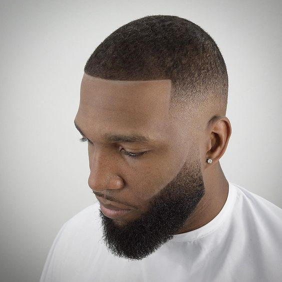
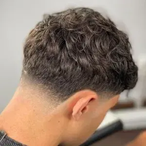
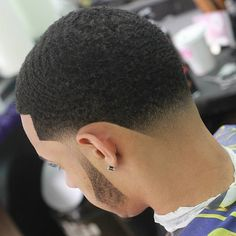
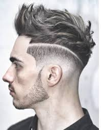
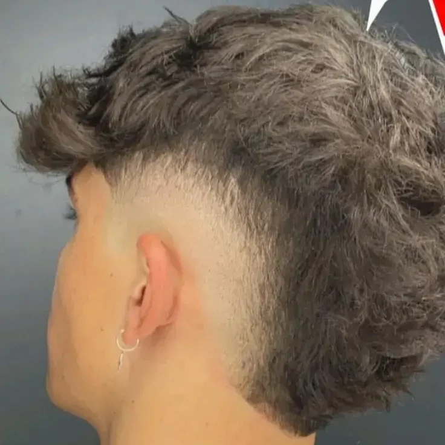
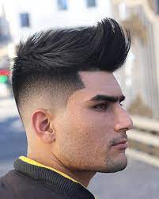

Explora nuestros estilos de cortes de cortes Americanos y Latinos
Características clave: Laterales cortos: Suelen ser cortos o desvanecidos, lo que crea un contraste con la parte superior. Parte superior más larga: Esta sección permite peinados como un copete, un estilo despeinado o incluso un look más formal, dependiendo de la ocasión. Textura: Muchas veces, se añade textura en la parte superior para darle un acabado más moderno y fácil de manejar. Este corte es ideal para quienes buscan un estilo fresco y adaptable a diferentes situaciones, desde el día a día hasta eventos más formales. ¿Te gustaría saber cómo mantenerlo o qué productos usar?
Desvanecido Progresivo: El taper fade implica que el cabello en los lados y la parte posterior se va acortando gradualmente desde la parte superior hacia la línea del cabello. Esto crea una transición suave entre el cabello más largo en la parte superior y el cabello corto en los lados. Versatilidad en la Parte Superior: La longitud de la parte superior puede variar, lo que permite diferentes estilos, como peinados hacia atrás, con textura, o más desordenados. Líneas Definidas: El corte se puede realizar con líneas más definidas o más suaves, dependiendo del estilo que se desee. Ajuste Personalizable: El taper fade se puede adaptar a diferentes longitudes y estilos, por lo que es muy popular entre hombres con diversos tipos de cabello. Fácil Mantenimiento: Aunque el corte requiere recortes regulares para mantener el desvanecido, es fácil de peinar y mantener en el día a día.
Textura y Movimiento: El corte Coby suele tener una textura que le da movimiento al cabello, lo que permite estilos despeinados o más definidos, dependiendo de la preferencia. Laterales Cortos: Por lo general, los lados son más cortos, lo que crea un contraste con la parte superior, que puede ser más larga y estilizada. Parte Superior Despeinada: La parte superior se deja más larga y se puede peinar de manera que se vea natural y desenfadado, muchas veces con un toque desordenado. Versatilidad: Se puede adaptar a diferentes tipos de rostro y texturas de cabello, lo que lo convierte en un corte accesible para muchos. Fácil de Mantener: Aunque el corte requiere algunos retoques periódicos, es relativamente fácil de peinar con el uso de productos adecuados. Fácil Mantenimiento: Aunque el corte requiere recortes regulares para mantener el desvanecido, es fácil de peinar y mantener en el día a día.
Capas: El corte texturizado generalmente implica la creación de capas en la parte superior, lo que ayuda a agregar volumen y movimiento al cabello. Longitud Variada: La parte superior suele ser más larga, mientras que los lados pueden ser cortos o desvanecidos, dependiendo del estilo deseado. Efecto Despeinado: Este corte se puede peinar de manera que se vea natural y desenfadado, a menudo con un estilo ligeramente despeinado. Versatilidad: Se puede adaptar a diferentes tipos de cabello, ya sea liso, ondulado o rizado, y es adecuado para diversas formas de rostro. Fácil Mantenimiento: Aunque puede requerir recortes regulares para mantener la forma, es relativamente fácil de peinar con los productos adecuados, como ceras o pomadas.
Corto en Frontal y Lados: La parte delantera y los lados son generalmente cortos, lo que le da un aspecto limpio y ordenado. Largo en la Parte Trasera: La parte trasera se deja más larga, creando un contraste marcado entre las diferentes secciones del cabello. Textura: Muchos optan por añadir textura a la parte trasera para darle un estilo más desenfadado y moderno. Variaciones: Existen diferentes estilos de mullet, como el "mullet moderno", que puede incluir capas o un acabado más pulido, y el "mullet clásico", que es más extremo en el contraste de longitudes. Personalización: Se puede combinar con otros estilos, como un fade en los lados o una parte texturizada en la parte superior.
Volumen en la Parte Superior: La clave del quiff es el volumen, que se logra con el cabello más largo en la parte superior, a menudo peinado hacia arriba y hacia atrás. Laterales Cortos: Los lados suelen ser cortos, lo que crea un contraste con la parte superior, que puede ser dejada texturizada o lisa. Estilo Variado: El quiff puede adaptarse a diferentes estilos, desde un acabado pulido y ordenado hasta un look más despeinado y desenfadado. Textura: A menudo se utiliza un producto texturizante para dar cuerpo y movimiento al peinado.
